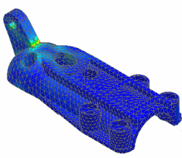
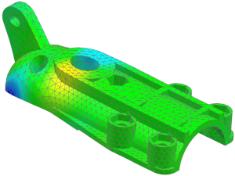

View the analysis results
The activity only has you step through two types of results. You are encouraged to spend some time looking at more of the results that were calculated during the solution.
 Simulation Navigator
Simulation Navigator
-
.gif) Results
Results
 Post-Processing Navigator
Post-Processing Navigator
-

 Solution 1 (expand if necessary)
Solution 1 (expand if necessary)
-
Strain - Element-Nodal (expand)
-
 Max Principal
Max Principal -
The results are displayed in the graphics window.

-
Displacement - Nodal (expand)
-
Y
The display updates to show the Y displacement values.

When you finish looking at the results, return to the model.
 Return to Model (Layout Manager toolbar)
Return to Model (Layout Manager toolbar)
|
Tip |
You may need to turn on the Layout Manager toolbar. |
 File→ Close→ All Parts
File→ Close→ All Parts